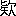

Aozora work 055665
Public-domain Japanese literature
別れ霜
わかれじも
- First published
- 「改進新聞」1892（明治25）年3月31日～4月10日、4月12日、14日～17日
- Aozora release
- Orthography
- 旧字旧仮名
- Edition
- 樋口一葉全集第一卷
- Publisher
- 新世社
- Source
- Aozora Bunko card
Learner profile
Difficulty statistics
Reviewscore withheld as an outlier
Model blue-sora-difficulty-v1 · status: outlier
- Words
- 14,562
- Characters
- 21,689
- Sentences
- 16
- Average sentence
- 910.1 words
- Unique words
- 2,770
- Unique kanji
- 1,382
- Single-use words
- 1,582 · 57.1%
- Single-use kanji
- 484
- Lexical rarity
- 34.7 · weight 55%
- Kanji rarity
- 64.7 · weight 25%
- Sentence complexity
- 100.0 · weight 20%
- Lexical surprisal
- 3.040
- Kanji surprisal
- 3.118
Online reader
Read here
第一囘#
莊子が蝶の夢といふ世に義理や誠は邪魔くさし覺め際まではと引しむる利慾の心の秤には黄金といふ字に重りつきて増す寶なき子寶のうへも忘るゝ小利大損いまに初めぬ覆車のそしりも我が梶棒には心もつかず握つて放さぬ熊鷹主義に理窟はいつも筋違なる内神田連雀町とかや、友囀りの喧しきならで客足しげき呉服店あり、賣れ口よければ仕入あたらしく新田と呼ぶ苗字そのまゝ暖簾にそめて帳場格子にやに下るあるじの運平不惑といふ四十男赤ら顏にして骨たくましきは薄醤油の鱚鰈に育ちて世のせち辛さなめ試みぬ附け渡りの旦那株とは覺えざりけり、妻はいつ頃なくなりけん、形見に娘只一人親に似ぬを鬼子とよべど鳶が産んだるおたかとて今年二八のつぼみの花色ゆたかにして匂濃やかに天晴れ當代の小町衣通ひめと世間に出さぬも道理か荒き風に當りもせばあの柳腰なにとせんと仇口にさへ噂し連れて五十稻荷の縁日に後姿のみも拜し得たる若ものは榮譽幸福上やあらん卒業試驗の優等證は何のものかは國曾議員の椅子にならべて生涯の希望の一つに數へいるゝ學生もありけり、さればこそ一たび見たるは先づ驚かれ再び見たるは頭やましく駿河臺の杏雲堂に其頃腦病患者の多かりしこと一つに此娘が原因とは商人のする掛直なるべけれど兎に角其美は爭はれず、姿形のうるはしきのみならで心ざまのやさしさ情の深さ絲竹の道に長けたる上に手は瀧本の流れを吸みてはしり書うるはしく四書五經の角々しきはわざとさけて伊勢源氏のなつかしきやまと文明暮文机のほとりを離さず、さればとて香爐峯の雪に簾をまくの才女めきたる行ひはいさゝかも無く深窓の春深くこもりて針仕事に女性の本分を盡す心懸け誠に殊勝なりき、家に居て孝順なるは出て必らず貞節なりとか、これが所夫と仰がれぬべく定まりたるは天下の果報の一人じめ前生の功徳いか許り積みたるにかと世にも人にも羨まるゝはさしなみの隣町に同商中の老舖と知られし松澤儀右衞門が一人息子に芳之助と呼ばるゝ優男、契りは深き祖先の縁に引かれて樫の實の一人子同志、いひなづけの約成立しはお高がみどりの振分髮をお煙草盆にゆひ初むる頃なりしとか、さりとては長かりし年月、ことしは芳之助もはや廿歳今一兩年經たる上は公に夫とよび妻と呼ばるゝ身ぞと想へば嬉しさに胸をどりて友達の嬲ごとも恥かしく、わざと知らず顏つくりながらも潮す紅の我しらず掩ふ袖屏風にいとゞ心のうちあらはれて今更泣きたる事もあり人みぬひまの手習に松澤たかとかいて見て又塗隱すあどけなさ利發に見えても未通女氣［＃「未通女氣」は底本では「末通女氣」］なり同じ心の芳之助も射る矢の如しと口にはいへど待つ歳月はわが爲に弦たゆみしやうに覺えて明かし暮らす程のまどろかしさよ、高殿に見る月の夕影を分つはいつぞとしのび、花の下ふむ露のあした双ぶる翅の胡蝶うらやましく用事にかこつけて折々の訪おとづれに餘所ながら見る花の面わが物ながら許されぬ一重垣にしみ／″＼とは物言交すひまもなく兎角うらめしき月日なり隙行く駒に形もあらば我れ手綱を取り鞭を揚げていそがさばやとまで思ひ渡りぬ、されども天は美人を生んで美人を惠まず多くは良配を得ざらしむとかいへり、彌生の花は風必ずさそひ十五夜の月雲かゝらぬはまことに稀なり、覺束なしや才子佳人かがなべて待つ歡びの日のいつか來べき、あし分船のさはり多き世なればこそ親にゆるされ世にゆるされ彼も願ひ此も請ひよしや魔神のうかゞへばとてぬば玉の髮一筋さしはさむべき間も見えぬを若此縁結ばれずとせばそは天災か將た地變か。
第二囘#
隴を得て蜀を望むは夫れ人情の常なるかも、百に至れば千をと願ひ千にいたれば又萬をと諸願休む時なければ心常に安からず、つら／＼思へば無一物ほど氣樂なるはあらざるべし、大抵が五十年と定まつた命の相場黄金を以て狂はせる譯には行かず、花降り樂きこえて紫雲の來迎する曉には代人料にて事調はずとは誰もかねて知れたる話、鶴千年龜萬年人間常住いつも月夜に米の飯ならんを願ひ假にも無常を觀ずるなかれとは大福長者と成るべき人の肝心肝要かなめ石の固く執つて動かぬ所なりとか、そも松澤新田らが祖先と聞えしは神風の伊勢の人にて夙に大江戸に志を立てゝ糶呉服の見るかげもなかりしが六間間口に黒ぬり土藏時のまに身代たち上りて男の子二人の内兄は無論家の相續弟には母方の絶たる姓を興させて新田とは名告らすれど諸事は別家の格に准じて子々孫々の末迄も同心協力事を處し相隔離すべからずといふ遺旨かたく奉戴して代々交りをかさね來しが當代の新田のあるじは家につきて血統ならず一人娘に入夫の身なりしかば相思ふの心も深からず且は利にのみ走る曲者なればかねては松澤が隆盛をたのみてあやにかけたる許嫁のえにし親なり子なり同舅同士なり不足の品あらば持ち給へと彼方にばかり親切を盡さして引入れし利も少なからず世は塞翁がうまき事して幾歳すぎし朝日のかげ昇るが如き今の榮は皆松澤が庇護なるものから喉元すぐれば忘るゝ熱さ斯く對等の地位に至れば目の上の瘤うるさくなりて獨りつく／″＼案ずるやう徑十町を距てぬ處に同商業を營むが上に彼れは本家とて世の用ひも重かるべく我とて信用薄きならねど彼方に七分の益ある時こゝには僅かに三分の利のみ我が家繁榮長久の策は彼れ松澤の無きにしかず且つは娘の容色世に勝れたれば是とても又一つの金庫芳之助とのえにし絶えなば通り町の角地面持參の聟もなきにはあらじ一擧兩得とはこれなんめりと思ふ心は娘にも祕め同氣求むる番頭の勘藏にのみ割て明かせば横手を拍つて賛成し主從日夜額をあつめて其方法を講じ居たりき、時なる哉松澤はさる歳商法上の都合に依り新田より一時借り入れし二千許の金ことしは既に期限ながら一兩年引つゞきての不景氣に流石の老舖も手元豐かならず殊に織元その外にも仕拂ふべき金いと多ければ新田は親族の間柄なり且は是迄我が方より立かへし分も少からねばよもや事情打あけて延期を乞はゞゆるさじと言ひもすまじ他人に内兜を見すかされ機械仕掛のあやつり身上松澤ももう下り坂よと囃されんは口惜しく脊なる新田は後廻し腹の織元其他へ有金大方取あつめて仕拂ひたる噂こそ耳よりのことなれと平生ねらひすませし的彼方より延期をいひ出さぬ間に、切て放して急催促に言譯すべき程もなく忽ち表向きの訴訟沙汰とは成れりける素松澤は數代の家柄世の信用も厚ければ僅々千や二千の金何方にても調達は出來得べしと世人の思ふは反對にて玉子の四角まだ萬國博覽曾にも陳列の沙汰をきかねど晦日に月の出る世の中十五夜の闇もなくてやは奧は朦朧のいかなる手段ありしか新田が畫策極めて妙にしていさゝかの融通もならず示談を請はゞやと奔走せしかどそれすらも調はずして新田は首尾よく勝を制し凱歌の聲いさましく引揚げしにそれとかはりて松澤が周章狼狽まこと寐耳に出水の騷動おどろくといふ暇もなく巧みに巧みし計略に爭ふかひなく敗訴となり家藏のみか數代續きし暖簾までも皆かれが手に歸したれば木より落たる山猿同樣たのむ木蔭の雨森新七といふ番頭の白鼠去年生國へ歸りし後は十露盤玉と筆先に帳尻つくろふ溝鼠のみなりけん主家一大事の今日も申合せたるやうに富士見西行きめ込み見返るものさへあらざれば無念の涙を手荷物にして名のみ床しき妻戀坂下同朋町といふ處に親子三人雨露を凌ぐばかりの家を借りて辛く膝をば入れたりけり、海ならず山ならぬ人世の行路難今初めて思ひ當り淵瀬ことなる飛鳥川の明日よりは何とせん、もと富家に人となりて柔弱にのみ育ちし身は是れと覺えし藝もなく手に十露盤は取りならへど物に當りし事なければ時の用には立ちもせず坐して喰へば空しくなる山高帽子半靴と明日かざりし身の廻りも一つ賣り二つ賣りはては晦日の勘定さへ胸につかふる程にもなりぬ。
第三囘#
一人並の男になりながら何の腑甲斐ない車夫風情にまで落魄ずともの事外に仕樣のあらうものをと大言吐きし昔の心の恥かしさよ誰れが好んで牛馬の代りに油汗ながし塵埃の中馳せ廻るものぞ仕樣模樣の竭きはてたればこそ恥も外聞もなひまぜにからめて捨てた身のつまり無念も殘念も饅頭笠のうちに包みて參りませうと聲低に勸める心いらぬとばかりもぎだうに過ぎ行く人それはまだしもなりうるさいはと叱りつけられて我知らずあとじさりする意氣地なさまだ霜こほる夜嵐に辻待の提燈の火の消えかへる迄案じらるゝは二親のことなり馴れぬ貧苦に責めらるゝと懷舊の情のやる方なさとが老體の毒になりてや涙がちに同じやうな煩ひ方それも御尤もなり我さへ無念に膓の沸え納まらぬものを胸さける程にも思召すなるべし憎きは新田なり恨めしきは運平なりよしや血をすゝり肉をつくすともるべき奴ならずと冷凍る拳握りつめて當處もなしに睨みもしつ思ひ返せばそれも愚痴なり恨みは人の上ならず我れに男らしき器量あらば是れ程までには窮しもすまじアヽと歎ずれば吐く息しろく見えて身を切る夜風に破れ屏風の内心配になりて絞つて歸るから車財布のものゝ少き程苦勞のたかの多くなりてまたぐ我家の閾の高さ、アヽお歸りかと起返る母、お父さんは御寢なツてゞすかさぞ御不自由で御座いましたらう何もお變りは御座いませんかと裏問ふ心は疵もつ足、オヽお前の留守に差配どのが見えられてといひさしてしばたゝく瞼の露白岡鬼平といふ有名の無慈悲もの惡鬼よ羅刹よと蔭口するは澁團扇の縁はなれぬ店子共が得手勝手家賃奇麗に拂ひて盆暮の砂糖袋甘き汁さへ吸はし置かば下ぐる目尻と諸共に眉毛の名によぶ地藏顏にも見ゆべけれど、今の身の上には憎くし剛慾もの事情あくまで知りぬきながら知らず顏の烟草ふか／＼身に過りあればこそ疊に額ほり埋めて歎願も吹出だす烟の輪と消して、言譯きく耳はなし家賃をさめるか店を明けるか道は二つぞ何方にでもなされとぽんとはたく其煙管で打わつてやりたい面がまち目的なしに今日までと日を延べしは重々此方が惡けれど母上とらへて何言居つたかお耳に入れまいと思へばこそ樣々の苦勞もするなれさらでもの御病氣にいとゞ重さを添へたやうなものはて困つたと言ひはせで低頭く心思案にくれぬ、差配どのが見えられてと母は詞［＃ルビの「ことば」は底本では「こゝば」］を繰返して何か譯は知らねど今直ぐに此家を立て一寸の猶豫もならぬとそれは／＼畫にもかゝれぬ談じやうお前にも料簡あることゝやうやうに言延べて歸ります迄と頼んでは置いたれどマアどうしたら宜からうか思案して見てくだされと小聲ながらもおろ／＼涙お案じなされますな何うにかなります今夜は大分更けましたから明日早々出向きまして談合ひをつけませうナニ少しの行違ひでそれほどの事では御座いませんと我が親にまでいつはるとはさても後のよ恐ろしゝ、寢ぬに明くる夜明け烏もこうと鳴きて反哺の教となるものを生甲斐なや五尺の身に父母の恩荷ひ切れずましてや暖簾の色むかしに染めかへさんはさて置きて朝四暮三のやつ／＼しさにつく／″＼浮世いやになりて我身捨てたき折々もあれど病勞れし兩親の寢顏さし覗くごとに我なくば何とし給はん勿體なしと思ひ返せど沸くは涙か藥鍋の下炭火とろ／＼と消え勝の生計とて良醫の手にもかゝられねば見す／＼重り行く心ぐるしさよ思へば天も地も神も佛も我爲には皆仇か今この場合を見すぐしにするとは何の事ぞ新田こそ運平こそ大惡人の骨頂なれ娘ばかりはよもやと思へどそれもこれも心の迷ひか姿こそ詞こそやさしけれ瓜の蔓に生らぬ茄子父親と同じ心になつて今の我身に愛想が盡きて、人傳の文一通それすらもよこさぬとは外面如菩薩、内心はあれも如夜叉め。
第四囘#
他人はとまれお前さまばかりは高が心御存じと思ふたは空だのめか情ないお詞お前さまと縁きれて生存へる私と思召すか恨みを申さば其お心が恨みなり父樣が惡計それお責め遊ばすにお答への詞もなけれど其くやしさも悲しさもお前さまに劣ることかは人知らぬ夜の家具の襟何故にぬるゝものぞ涙に色のもしあらば此袖ひとつにお疑ひは晴れやうもの一つ穴の獸とは餘りの仰せつもりても御覽ぜよ繋がれねど身は籠の鳥も同じこと風呂屋に行くも稽古ごとも一人あるきゆるされねば御目にかゝる折もなく文あげたけれど御住所誰に問ひもならず心にばかり泣て泣て居りましたを薄情もの義理しらずと押くるめてのお詞お道理なれど御無理なり此身一つに科があらば打たれもせん突かれもせん膝ともといふ談合相手に遊ばしてよと涙ながら控へる袂を鋭く拂つてお高どの詞ばかりは嬉しけれど眞實やら何やら心まで見る目は芳之助あやにく持たず父御の心も大方は知れてあり甲斐性なしの我れ嫌になりて縁の絶ちどが無さに計略三昧かゝりし我等は罠のうちの獸ぞ手を打て笑はるゝ筈を何の涙お化粧がはげては氣の毒なり牛に乘換へるうまき話も内々は有ることならんを家藏持參の業平男に見せ給ふ顏我等づれに勿體なしお退きなされよ見たくもなしとつれなしや後むき憎らしき事の限り並べられても口惜しきはそれならず解けぬ心にあらはれぬ胸うらめしく君樣こそは何とも思召すまじけれど物ごゝろ知る其頃よりさま／″＼のこと苦勞にして身だしなみ物學び彼れか此れかお氣に入りたや飽かれまじと心のたけは君樣故に使はれて片時安き思ひもせずお友達遊びも芝居行きもお嫌ひと知れば大方は斷りいふて僻物と笑はれしは誰れの爲をさな遊びの昔は知らず睦じき中にも恥かしさが楯に成りて思ふこと思ふまゝにも得いはざりしを淺き心と思召すか假令どのやうな事あればとて仇し人に何のその笑顏見せてならうことかは山ほどの恨みも受くる筋あれば詮方なし君樣に愛想つきての計略かとはお詞ながら餘りなり親につながるゝ子罪は同じと覺悟ながら其名ばかりはゆるし給へよしや父樣にどのやうなお憎しみあればとて渝らぬ心の私こそ君樣の妻なるものを何とげ／＼しい他人あしらひ聞えぬお心やといひたさを押ゆる涙袖に置きてモシと止めれば振拂ふ羽織のすそエヽ何さるゝ邪魔くさし我はお前さまの手遊ならずお伽になるは嬉しからず其方は大家の娘御暇もあるべしその日暮しの身は時間もをしく誰れぞ相手をお探しなされと振はらへば又すがり芳さまそれは御眞實かと見上ぐる面睨みかへして嘘いつはりはお前さまなどのなさること義理人情のある世ならよもやと思ふ生正直から飼ひ犬同樣な人でなしに手をかまれて暖簾に見る恥は誰れゆゑぞ原を正せば根分けの菊親子の中に知らぬといふ道理はなしよし知らぬにせよ知るにせよそれは其方の御勝手なり仇敵の子を妻にもせられず嫁にもすまじ言ふこともなし聞くことも無し恨みつらみを並べ立てなば力車に牛の汗何の積み載せきれるものかは言はぬが花ぞお前さまは盛りの身春めき給ふは今の間なるべし薦かぶりながら見送らんと詞叮嚀に氣込あらく齒の根きり／＼と喰ひしばりて釣り上ぐる眉根おそろしく散髮斜めに拂ひあげて白き面に紅の色さしも優しき常には似ず止めれば振きる袖袂まづ今しばしと詫びつ恨みつ取りつく手先うるさしと立蹴にはたと蹴倒されわつと泣く聲我れとわが耳に入りて起き返るは何處、平常の部屋に倚りかゝる文机の湖月抄こてふの卷の果敢なく覺めて又思ひそふ一睡の夢夕日かたぶく窓の簾風にあほれる音も淋し。
第五囘#
お珍らしやお高さま今日の御入來は如何いふ風の吹まはしか一昨日のお稽古にも其前もお顏つひにお見せなさらずお師匠さまも皆さまも大抵でないお案じ日がな一日お噂して居ましたと嬉しげに出迎ふ稽古朋輩錦野はな子と呼ばれて醫學士の妹博愛仁慈の聞えたかき兄を見眞似か温順しづくり何某學校通學生中に萬緑叢中一點の紅と稱へられて根あがりの高髷に被布扮粧廿歳を越しての肩縫あげ可愛らしき人品なりお高さま御覽なされ老人なき家の埒のなさ兄は兄とて男の事家内のことはとんと棄物私一人が拍つも舞ふもほんに埃だらけで御座いますと笑ひて誘ふ座蒲團の上おかまひ遊ばすなと沈み聲にお高うやむやの胸の關所たれに打明けん相手もなし朋友の誰れ彼れ睦まじきもあれどそれは春秋の花紅葉對にして す簪の造物ならねど當座の交際姿こそはやさしげなれ智慧宏大と聞くは此人すがりて見ばやとこれも稚氣さりながら姿に知れぬは人の心笑ひものにされなばそれも恥かし何とせんと思ふほど兄弟ある人羨ましくなりてお兄樣はおやさしいとかお前さま羨ましと口を洩るれば花子少し笑みを含んでこればかりは私の幸福さりとて喧嘩する時もあり無理な小言いはれまして腹立ち合ふこともあれど跡も無し先もなし海鼠のやうなと笑はれます此頃は施療に暇がなうて芝居も寄席もとんと御無沙汰その内にお誘ひ申します兄はお前さまをといひかけて笑ひ消す詞何としらねどお施しとはお情深い事さぞかし可哀さうのも御座いませうと思ふことあれば察しも深し花子煙草は嫌ひと聞しが傍の煙管とりあげて一服あわたゞしく押やりつそれはもうさま／″＼ツイ二日計前のこと極貧の裏屋の者が難産に苦みまして兄の手術に母子とも安全ではありましたれど赤子に着せる物がないとか聞きませば平常の心に承知がならず其の夜通して針仕事着るもの二つ遣はしましたと得意顏の物語り徳は陰なるこそよけれとか聞しが怪しのことよと疑ふ胸に相談せばやの心は消えぬ花子さま／″＼の患者の話に昨日往診し同朋町とやら若しやと聞けばつゆ違はぬ樣子なりそれほどまでにはよもやと思へど正しくならば何とせん實否くはしく聞きたしと思へど咎むる心に詞つまりて應答何やらうろうろになりぬお高さま御ゆるりなされ今兄も戻りまする先それよりはお目に懸けたきもの往日お話し申せし兄が祕藏の畫帖イエお前さまに御覽に入るゝに賞められこそすれ何として小言聞くことではなしお待遊ばせよと待遇ぶり詞滑かの人とて中々に歸しもせず枝に枝そふ物がたり花子いとゞ眞面目になりて斯う申してはをかしけれどお前さまはお一人子私とても兄ばかり女の同胞もちませねば淋しさは同じこと何かにつけて心細し御不足かは知らねど妹と思召してよと底にものある詞遣ひそれは私より願ふことゝいふ詞聞きも畢らずそれならばお話ありお聽き下さりますかと怪しの根問ひお高さまお前さまのお胸一つ伺へば譯のすむ事外でもなし實の姉さまにおなり下さらぬかと決然いはれて御串戯［＃ルビの「ごじやうだん」は底本では「ごじやだん」］私こそ實の妹と思召してと言ふを遮りそれでは未だ御存じの無きならん父御さまと兄との中にお話し成立つてお前さまさへ御承知ならば明日にも眞實の姉樣お厭か／＼お厭ならばお厭でよしと薄氣味わろき優しげの聲嘘か實か餘りといへば餘りのこと、亂るゝ心を流石に靜めて花子さま仰せまだ私には呑込めませぬお答へも何も追てのこと今日は先づお暇と立たんとするを強ても止めず然らばお歸りか好きお返事お待申しますと送り出す玄關先左樣ならばを跡になして乘り出す車の掛聲に走り退く一人の男あれは何方の藥取憐れの姿やと見返れば彼方よりも見返る顏オヽ芳さま詞の未だ轉び出でぬ間に車は轣轆として轍のあと遠く地に印されぬ。
す簪の造物ならねど當座の交際姿こそはやさしげなれ智慧宏大と聞くは此人すがりて見ばやとこれも稚氣さりながら姿に知れぬは人の心笑ひものにされなばそれも恥かし何とせんと思ふほど兄弟ある人羨ましくなりてお兄樣はおやさしいとかお前さま羨ましと口を洩るれば花子少し笑みを含んでこればかりは私の幸福さりとて喧嘩する時もあり無理な小言いはれまして腹立ち合ふこともあれど跡も無し先もなし海鼠のやうなと笑はれます此頃は施療に暇がなうて芝居も寄席もとんと御無沙汰その内にお誘ひ申します兄はお前さまをといひかけて笑ひ消す詞何としらねどお施しとはお情深い事さぞかし可哀さうのも御座いませうと思ふことあれば察しも深し花子煙草は嫌ひと聞しが傍の煙管とりあげて一服あわたゞしく押やりつそれはもうさま／″＼ツイ二日計前のこと極貧の裏屋の者が難産に苦みまして兄の手術に母子とも安全ではありましたれど赤子に着せる物がないとか聞きませば平常の心に承知がならず其の夜通して針仕事着るもの二つ遣はしましたと得意顏の物語り徳は陰なるこそよけれとか聞しが怪しのことよと疑ふ胸に相談せばやの心は消えぬ花子さま／″＼の患者の話に昨日往診し同朋町とやら若しやと聞けばつゆ違はぬ樣子なりそれほどまでにはよもやと思へど正しくならば何とせん實否くはしく聞きたしと思へど咎むる心に詞つまりて應答何やらうろうろになりぬお高さま御ゆるりなされ今兄も戻りまする先それよりはお目に懸けたきもの往日お話し申せし兄が祕藏の畫帖イエお前さまに御覽に入るゝに賞められこそすれ何として小言聞くことではなしお待遊ばせよと待遇ぶり詞滑かの人とて中々に歸しもせず枝に枝そふ物がたり花子いとゞ眞面目になりて斯う申してはをかしけれどお前さまはお一人子私とても兄ばかり女の同胞もちませねば淋しさは同じこと何かにつけて心細し御不足かは知らねど妹と思召してよと底にものある詞遣ひそれは私より願ふことゝいふ詞聞きも畢らずそれならばお話ありお聽き下さりますかと怪しの根問ひお高さまお前さまのお胸一つ伺へば譯のすむ事外でもなし實の姉さまにおなり下さらぬかと決然いはれて御串戯［＃ルビの「ごじやうだん」は底本では「ごじやだん」］私こそ實の妹と思召してと言ふを遮りそれでは未だ御存じの無きならん父御さまと兄との中にお話し成立つてお前さまさへ御承知ならば明日にも眞實の姉樣お厭か／＼お厭ならばお厭でよしと薄氣味わろき優しげの聲嘘か實か餘りといへば餘りのこと、亂るゝ心を流石に靜めて花子さま仰せまだ私には呑込めませぬお答へも何も追てのこと今日は先づお暇と立たんとするを強ても止めず然らばお歸りか好きお返事お待申しますと送り出す玄關先左樣ならばを跡になして乘り出す車の掛聲に走り退く一人の男あれは何方の藥取憐れの姿やと見返れば彼方よりも見返る顏オヽ芳さま詞の未だ轉び出でぬ間に車は轣轆として轍のあと遠く地に印されぬ。
第六囘#
中硝子の障子ごしに中庭の松の姿をかしと見し絹布の四布蒲團すつぽりと炬燵の内あたゝかに、美人の酌の舌鼓うつゝなく、門を走る樽ひろひあれは何處の小僧どん雪中の一つ景物おもしろし、とても積らば五尺六尺雨戸明けられぬ程に降らして常闇の長夜の宴、張りて見たしと縺れ舌に譫言の給ふちろ／＼目にも六花の眺望に別は無けれど、身にしむ寒さは降かゝりての後ならで知れぬ事なり、うそ寒しと云ひしも二日三日朝來もよほす薄墨色の空模樣に頭痛もちの天氣豫報相違なく西北の風ゆふ暮かけて鵞毛か柳絮かはやちら／＼と降り出でぬ、入相の鐘の聲陰に響きて塒にいそぐ友烏今宵の宿りの侘しげなるに誰が空せみの夢の見初め、待合の奧二階の爪彈きの三下り簾を洩るゝ笑ひ聲低く聞えて思はず停る行人の足元、狂ふ煩惱の犬の尻尾、しまつたりと飛び退きて畜生めとはまこと踏みつけの詞なり、我が物なれば重からぬ傘の白ゆき往來も多くはあらぬ片側町の薄ぐらきに悄然とせし提燈の影かぜに瞬くも心細げなる一輛の車あり、齒代の安さ顯はれて剥げたる塗り破れし母衣、夜目なればこそ未だしもなれ晝はづかしき古毛布に乘客の品も嘸ぞと知られて多くは取れぬ痩せ田作り米の代ほど有りや無しや九尺二間の煙の綱あはれ手中にかゝる此人腕力おぼつかなき細作りに車夫めかぬ人柄華奢といふて賞めもせられぬ力役社會に生ひ立つた身とは請取れず履歴は如何に聞きたしと問ふ人なければ我れと唇開きもならず、アヽと出る溜息を噛しめる齒の根寒さにふるひて打仰ぐ面を見れば扨も美男子色こそは黒みたれ眉目やさしく口元柔和に歳は漸く二十か一か繼々の筒袖着物糸織ぞろへに改めて帶に卷く金鎖りきらびやかの姿させて見たし流行の花形俳優何として及びもないこと大家の若旦那それ至當の役なるべし、さりとては是れ程の人品備へながら身に覺えた藝は無きか取上げて用ひる人は無きか憐れのことやとは目の前の感じなり心情さら／＼知れたものならず美くしき花に刺もあり柔和の面に案外の所爲なきにもあらじ恐ろしと思へばそんなもの、贔負目には雪中の梅春待つまの身過ぎ世過ぎ小節に關はらぬが大勇なり辻待の暇に原書繙いて居さうなものと色眼鏡かけて見る世上の物映るは自己が眼鏡がらなり、夜はまだ更けねど降しきる雪に人足大方絶々になりて戸を下す商家こゝかしこ遠く引く按摩の聲に近く交る犬の子の叫びそれすらも淋しきを路傍の柳にさつと吹く風になよ／＼と靡いて散るは粉雪、物思ひ顏の若者が襟のあたり冷いやりとしてハツと振拂へば半面を射る瓦斯燈の光蒼白し、行く人はなし乘る人は猶更なからんを何を待つとか馬鹿らしさよと他目には見ゆるゐものからまだ立去りもせず前後に目を配るは人待つ心の絶えぬなるべし、凍る手先を提燈の火に暖めてホツと一息力なく四邊を見廻し又一息此處に車を下してより三度目に聞く時の鐘、今はと決心の臍固まりけんツト立上りしが又懷中に手をさし入れて一思案アヽ困つたと我知らず歎息の詞唇をもれて其儘に身はもとの通り舌打の音續けて聞えぬ、雪はいよ／＼降り積るとも歇むべき氣色少しも見えず往來は到底なきことかと落膽の耳に嬉しや足音辱しと顧みれば角燈の光り雪に映じ巡囘の査公怪しげに目を注いで行き過ぎられし後に又人音この度こそはと見れげ情なし三軒許手前なる家に入りぬ、流石に氣根も竭果てけん茫然として立つくす折しも最少し參ると御座いませうと話し聲して黒き影目に映りぬ、天の與へ人こそ來つれ外すまじと勇み立て進み寄ればはて何とせん、過たるは及ばざる二人連とは生憎や、車は一人乘りなるを。
第七囘#
心苛られのさるゝものは散曾過ぎて來ぬ迎ひの車と數へ入れたし、待たせて置きても宜かりしを供待ちの雜沓遠慮して時間早めに吩咐て還せしもの何としての相違ぞやよもや忘れて來ぬにはあらじ家にても其通り何時まで迎ひ出さずには置かれまじ、例の酒癖何處の店にか醉ひ倒れて寢入りても仕舞しものかそれなればいよいよ困りしことなり家にても嘸お案じ此家へも亦氣の毒なり何とせんと思ふ程より積る雪いとゞ心細く燭涙ながるゝ表二階に一人取殘されし新田のお高、げにも浮世か音曲の師匠の許に然るべき曾の催し斷りいはれぬ筋ならねどつらきものは義理の柵是非と待たれて此日の午後より、飾る錦の裏はと問はゞ涙ばかりぞ薄化粧に深き苦勞の色を隱して友が無邪氣の物語りを笑ふて聞く胸ぐるしさ思ひに痩し手首に取りすがりてお羨ましやお高さまのお手の細さよお酢めし上りしか御傳授聞きたしと眞面目に問ふ人可笑しくはなくて其心根羨ましくなりぬ其の人々歸り果てゝより一時間許待つには長き時間ながら車の音門にも聞えず捨置かれなば未だしもなれどお茶參らせよお菓子あがれ夜はまだそれほど深くもなしお迎ひも今參らん御ゆるりなされと好遇さるゝ程猶更氣の毒さ堪へ難くなりて何時まで待ちても果て見えませねば憚りながら車一つ願ひたしと婢女に周旋のほど頼み入ればそれは何の造作もなきことなれどつひ行き違ひにお迎ひの參るまじとも申されず今少しお待なされてはと澁々にいふは車もとめに行くがつらさになるべし、それも道理雪の夜道押してとは言ひかねて心ならねど又暫時二度目に入れし茶の香り薄らぐ頃になりても音もなければ今は來ぬものか來るものか當てにもならず當てにして何時といふ際限もなし行き違ひになるともそれはよし兎に角車願ひたしと押かへして頼み入るゝに師匠實にもと氣の毒がりて然らばお止め申すまじとてもお歸りなさるゝに夜が更けてはよろしからず車大急ぎに申して來よと主の命令には詮方なくてや恨めしげながら承はりて梯子あわたゞしく馳せ下りしが水口を出づる大黒傘の上に雪つもるといふ間もなきばかり速かに立歸りて出入の車宿名殘なく出拂ひて挽子一人も居ませねばお氣の毒さまながらと女房が口上其まゝの返り事に然らば何とせんお宅にお案じはあるまじきに明早朝の御歸館となされよなど親切に止められるれど左樣もならず、雪こそふれ夜はまだそれほどに御座りませねばと歸り支度とゝのへるにそれならば誰ぞ供にお連なされお歩行御迷惑ながら此邊には車鳥渡むづかしからん大通り近くまで御難澁なるべし家内にてすら火桶少しも放されぬに夜氣に當つてお風めすな失禮も何もなしこゝより直にお頭巾召せ誰れぞお肩掛お着せ申せと總掛りに支度手傳はれて憚りさまといひも敢ず更けぬ内にお急ぎなされなまなかお止め申さずば是れ程に積るまいものお氣の毒のこといたしたりお詫はいづれと送り出す門口犬の子の聲恐ろしけれど送りの女中が骨たくましきに心強くて軒下傳ひ三町ばかり御覽なされませあの提灯は屹度車今少しの御辛防と引く手も引かるゝ手も氷りつくやうなり嬉しやと近づいて見ればさても破れ車モシと聲はかけしが後退さりする送りの女中ソツとお高の袖引きてもう少し參りませうあまりといへばと跡は小聲なり折しも降しきる雪にお高洋傘を傾けて見返るともなく見返る途端目に映るは何物蓬頭亂面の青年車夫なりお高夜風の身にしみてかぶる／＼と震へて立止りつゝ此雪にては先へ行きても有るか無きか知れませねば何にてもよし此の車お頼みなされてよと俄に足元重げになりぬあの此樣な車にお乘しなさるとかあの此樣な車にと二度三度お高輕く點頭きて詞なし我れも雪中の隨行難儀の折とて求むるまゝに言附くる那の車さりとては不似合なり錦の上着につゞれの袴つぎ合したやうなと心をかしく挽出すを見送つて御機嫌よう車夫さんよくお氣をつけ申して。
第八囘#
馳せ出す車一散、さりながら降り積る雪車輪にねばりてか車上の動搖する割に合せて道のはかは行かず萬世橋に來し頃には鐵道馬車の喇叭の聲はやく絶えて京屋が時計の十時を報ずる響空に高し、萬世橋へ參りましたがお宅は何方と軾を控へて佇む車夫、車上の人は聲ひくゝ鍋町までと只一言、車夫は聞きも敢へず力を籠めて今一勢と挽き出しぬ、皚々たる雪夜の景に異りはなけれど大通りは流石に人足足えず［＃「足えず」はママ］雪に照り合ふ瓦斯燈の光り皎々として、肌をさす寒氣の堪へがたければにや、車上の人は肩掛深く引あげて人目に見ゆるは頭巾の色と肩掛の派手模樣のみ、車は如法の破れ車なり母衣は雪を防ぐに足らねば、洋傘に辛く前面を掩ひて行くこと幾町、鍋町は裏の方で御座いますかと見返れば否鍋町ではなし、本銀町なりといふ、然らばとばかり馳せ出す又一町、曲りませうかと問へば、眞直にと答へて此處にも車を止めんとはせず日本橋迄行きたしといふに何かは知らねど詞の通り、河岸につきて曲りてくれよ、とは何方右か左か、左へいや右の方へと又一横町、お氣の毒なれど此處を折れて眞直に行て欲しゝと小路に入りぬ、何の事ぞ此路は突當り、外に曲らん路も見えねば、モシお宅はどの邊でと覺束なげに問んとする時、何とせん道を間違へたり引返してと復跡戻り、大路に出れば小路に入らせ小路を縫ては大路に出で走幾走、轉幾轉、蹴立る雪に轍のあと長く引てめぐり出れば又以前の道なり、薄暗き町の片角に車夫は茫然と車を控へて、仰の通りに參りましたら又以前の道に出ましたが若しやお間違ひでは御座いますまいか此角を曲ると先程の糸屋の前眞直に行けば大通りへ出て仕舞ひますたしか裏通りと仰せで御座いましたが町名は何と申しますか夫次第大抵は分りませうと問掛けたり、車上の人は言葉少に兎に角曲つて見て下され、たしか此道と思ふやうなりとて梶棒を向きかへさせぬ、御覽なされまし矢張りこゝは元の道これで宜しう御座いますかと訝しみて問ふ車夫の言葉に、ほんにこれは違ひたりもう一つ跡の横町がそれなりしかも知れずと曖昧の答へ方、さればといふて挽き返す一横町こゝにもあらず今少し先へといふ提燈搖り消して商家に火を借りしも二度三度車夫亦道に委しからずやあらん未だ此職に馴れざるにやあらん同じ道行返りて困じ果てもしたらんに強くいひても辭しもせず示すが儘の道を取りぬ、夜は漸々に深くならんとす人影ちらほらと稀になるを雪はこゝ一段と勢をまして降りに降れど隱れぬものは鍋燒饂飩の細く哀れなる聲戸を下す商家の荒く高き音、さては按摩の笛犬の聲小路一つ隔てゝ遠く聞ゆるが猶更に淋し、さても怪しや車上の人萬世橋にもあらず鍋町にもあらず本銀町も過ぎたり日本橋にも止まらず大路小路幾通りそも何方に行かんとするにか洋行して歸朝の後に妻を忘るゝ人ありとか聞きしがこれは又いかに歸るべき家を忘れたるか歳もまだ若かるを笑止といはゞ笑止思へば扨も訝しき事なり、今度は京橋へと急がせぬ、裏道傳ひ二町三町町名は何と知れねど少し引き入りし二階建に掛行燈の光り朧々として主はありやなしや入口に並べし下駄二三足料理番が欠伸催すべき見世がゝりの割烹店あり、車上の人は目早く認めて、オヽ此處なり此處へ一寸と俄の指圖に一聲勇ましく引入れる車門口に下ろす梶棒と共にホツト一息内には女共が口々に入らつしやいまし。
第九囘#
勢ひよく引入れしが客を下ろして扨おもへば恥かしゝ、記憶に存る店がまへ今の我が身には往昔ながら世の人は未だ昨日といふ去年一昨年、同商中の組合曾議或は何某の懇親曾に登りなれし梯子なり、それと知れば俄に肩すぼめられて見る人なければ遽しく片蔭のある薄暗がりに車も我も寄せて憩ひつ、靜かに顧みれば是れも笹原走るたぐひ、誰が目に覺えて知るものぞ松澤の若大將と稱へられて席を上座に設けられし身が我れすらみすぼらしき此服裝よしや面に覺えが有ればとて他人の空肖、それもあるならひなり況してや替りたる雪と墨おろかなこと雲と泥ほど懸隔のおびたゞしさ如何に有爲轉變の世とはいへ是れほどの相違誰れが何として氣のつくべき心の鬼に見知り越しの人目厭はしく態と横町に道を避けて見られじとする氣あつかひも他人は何の感じもなく摺れ違つて見合はす眼の電光、ハツと思ふは我ればかり、態とつくるかまこと見忘れてか知らず顏に過ぎ行かれて、撫で下ろす胸にむら／＼と感じるはさても人情こそ薄きものなれ紙といはゞ吉の紙見えすいたやうな世の中なり、知り顏して欲しきにもあらず詞かけられては身の置場もなけれどそれにも何か色のあるもの、物いはゞ振切らんず袖がまへ嘲るやうな尻目遣ひ口惜しと見るも心の僻みか召使ひの者出入のもの指折れば少からぬ人數ながら誰れ一人として我れ相談の相手にと名告出づるものなし、富貴には寄る親類顏幾代先きの誰樣に何の縁故ありとかなしとか猫の子の貰ひ主までが實家あしらひのえせ追從、槌で掃く庭石の周旋を手はじめに引き入れる工夫算段はじいて見ねば知れぬものゝ割りにも合はぬ品いくら冠せて上穗は自己が内懷中ぬく／＼とせし絹布ぞろひは誰れ故に着し物とも思はずお庇護に建ちましたと空拜みせし新築の二階造り其の詞は三年先の阿房鳥か、今の零落を高見に見下して全體意氣地が無さすぎると言ひしとか酷と思ふは心がらなり、他人が聞けば適當の評といはれやせん別家も同じき新田にまで計らるゝ程の油斷のありしは家の運の傾く時かさるにても憎きは新田の娘なり、うつくしき顏に似合ぬは心小學校通ひに紫袱紗對にせし頃年上の生徒に喧嘩まけて無念の拳を我れ握る時同じやうに涙を目に持ちて、口惜しげに相手を睨みしこともありしがそれは無心の昔なり我れ性來の虚弱とて假初の風邪にも十日廿日新田の訪問懈れば彼處にも亦一人の病人心配に食事も進まず稽古ごとに行きもせぬとか、お前さまお一人のお煩ひはお兩人のお惱みと婢女共に笑はれて嬉しと聞きしが今更おもへば故らに言はせしか知れたものならず此頃見しは錦野の玄關先うつくしく粧ふた身に比べて見て我れより詞は掛けられねど無言に行過ぎるとは不埒ならずや身こそ零落たれ許嫁の縁きれしならずまこと其心なら美くしく立派に切れてやりたし切れるといへば貧乏世帶のカンテラの油、今宵の用ひだけありしか如何に、さらでも御不自由のお兩親が燈火なくば嘸お困り早く歸りて樣子知りたきもの、今の客人の氣の長さまだ車代くれんともせず何時まで待たする心にやさりとてまさかに促りもされまじ何としたものぞとさし覗く奧の方廊下を歩む足音にも面赫と熱くなりて我知らず又蔭に入る、思へば待たるゝやうな待たれぬやうな萬一車代を渡す人知りし顏の女中ならば何とせん詞がけられなば何といはん恥の上塗りは要なきことなり車代といふも知れたもの受けずともよし此まゝに歸らんか否是れ欲しければこそ雪の夜を二時三時恥も外聞も親には換へられたものならず、はて誰れでも出て來よ此姿に何として見覺えがあるものかと自問自答折しも樓婢のかなきり聲に、池の端から來た車夫さんはお前さんですか。
第十囘#
それは何ぞのお間違ひなるべし私お客樣にお懇親はなし池の端よりお供せしに相違は無けれど車代賜るより外に御用ありとは覺えず其譯仰せられて車代の頂戴お願ひ下されたしと一歩も動かんとせぬ芳之助を誘ふ樓婢は笑みを含み、お間違ひやら何やら私等の知る事ならねど只お客さまの仰せには今の車夫に用事がある足を洗はせて此室へ呼びたしと仰せられたに相違はなし兎に角お上りなされよと洗足の湯まで汲んでくるゝはよも串戯にはあらざるべし僞りならずとせば眞以て奇怪、何人が何用ありて逢ひたしといふにや親戚朋友の間柄にてさへ面背ける我に對して一面の識なく一語の交はりなき然かも婦人が所用とは何事逢たしとは何故人違ひと思へば譯もなければ彼處といひ此處といひ乘り廻りし方角の不審しさそれすら事の不思議なるに頼みたきことあり足を洗ひて上りくれよとは扨も意外わからぬといへば是れ程わからぬ話はなし何とせば宜からんかと佇立たるまゝ躊躇へば樓婢はもどかしげに急がしたてゝ、お客さまも嘸お待ちかねお逢にならば譯はどの道知れる筈なり先づお出なされよと手をとらへて引立つるに然らば參るべしお手お放しなされ大方は人違ひと思へどお目にかゝりし上ならではお疑ひ晴れ難からん御案内お頼み申すと明瞭に答へながら心の裡は依然濛々漠々、靜かに足を淨め了りていざとばかりに誘はれぬ、流石なり商賣がら燦として家内を照らす電燈の光りに襤褸の針の目いちじるく見えて時は今極寒の夜ともいはず背に汗の流るぞ苦しき、お客さまはお二階なりといふ伴はるゝ梯子の一段又一段浮世の憂きといふ事知らで昇り降りせしこともありし其時の酌取り女我が前離れず喋々しく 
第十一囘#
又逢ふ場所は某の辻某の處に待給へ必らずよと契りて別れし其夜のこと誰れ知るべきならねば心安けれど心安からぬは松澤が今の境涯あらましは察しても居たものゝそれ程までとは思ひも寄らざりしが其御難儀も誰がせし業ならず勿躰なけれど我が親うらみなり聞かれぬまでも諫めて見んか否父はともあれ勘藏といふものある以上なまなかの事言出して疑ひの種になるまじとも言ひ難しお爲にならぬばかりかは彼の人との逢瀬のはしあやなく絶もせば何かせん然るべき途のなからずやと惑ふは心つゝむ色目に何ごとも顯はれねど出嫌ひと聞えしお高昨日は池の端の師匠のもとへ今日は駿河臺の錦野へと駒下駄直さする日の多かるを不審といはゞ不審もたつべきながら子故にくらきは親の眼鏡運平が邪智ふかき心にも娘は何時も無邪氣の子供伸びしは脊丈ばかりと思ふか若しやの掛念少しもなくハテ中の好かりしは昔のことなり今の芳之助に何として愛想の盡ぬものがあらうか娘はまして孝心ふかし親の命令ること背く筈なし心配無用と勘藏が注意をさへ取りあげもせず錦野が懇望恰もよし彼れは有徳の醫師なりといふ故郷某の地には少からぬ地所をさへ持てりと聞くに娘の爲にも我が爲にも行末わろき縁組ならずとより／＼の相談も洩れきく身の腹だゝしさ縱令身分は昔の通りならずとも現在ゆるせし良人ある身に忌はしき嫁入沙汰きくも厭なり表にかざる仁者顏は畢竟何事かの手段かも知れたことならず優しげな妹御も當てにならぬよし折々見たこともあり毒蛇のやうな人々信用なさるお心には何ごと申すとも甲斐はあるまじさりとて此儘に日を送らば悲しきことの來んは目の前なり聞かせて心配さするも憂ければ頼むは彼の人の力のみ男の智慧には良き考へもなからずやと思ひたてば心は矢竹、はやるほど猶落附てお友達の誰さま御病氣ときく格別に中の好き人ではあり是非お見舞申したく存じますがと許容を請へば平常の氣だてに有るべき願ひとて疑ひもなく運平點頭きて然らば疾く行きて疾くかへれ病人の處に長居はせぬもの供には鍋なりと連れて行きなされと氣をつくればイエそれには及びませぬ裏通りを行けばつい其處なり鍋も家のことが忙しう御座いますツイ行てツイ歸るに供などゝは大層すぎます支度も何も入りませぬ、此儘すぐにとそこ／＼身仕度して庭口出でんとする途端孃さま今日もお出かけか何處へぞと勘藏がぎろ／＼目恐ろしけれど臆してなるまじと態とつくる笑顏愛らしく今日もとは勘藏酷いぞや今日はと言はねばてにをはが違ふ所ぞとほゝ笑みて何氣もなしに家を出でぬ約束の辻往つ返りつ待てどもまてども今日はいかにしけん影も見えず誰れに聞かんもうしろめたし何とせん必ず訪ひ給ふな我家知られんは恥かしとて丁所つげ給はねど曩に錦野にてそれとなく聞きしはうろ覺えながら覺えあり縱しお怒りにふれゝばそれまで、空しく物をおもふよりは寧お目にかゝりしうへにて兎も角もせんと心に答へて妻戀下とばかり當所なしにこゝの裏屋かしこの裏屋さりとては雲掴むやうな尋ねものも思ふ心がしるべにや松澤といふか何か知らねど老人の病人二人ありて年若き車夫の家ならば此裏の突當りから三軒目溝板の外れし所がそれなりとまで教へられぬ時は夕暮の薄くらきに迷ふ心もかき暮されて何と言入れん戸のすき間よりさし覗く家内のいたましさよ頭巾肩掛に身はつゝめど目をもるものは紅の涙。
第十二囘#
さらでも老ては僻むものとか況んや貧にやつれ苦にやつれ人恨めしく世の中つらく明けては歎き暮れては怒り心晴間なければさまでには無き病氣ながら何時癒るべき景色もなくあはれ枯木に似たる儀右衞門夫婦待ちわびしきは春ならで芳之助の歸宅の遲さよ好き［＃「好き」は底本では「好さ」］客ありて遠くまで行きたるにやそれにしても最う歸りさうなもの日沒まへに一度づゝ樣子見に戻るが常なるを何として今日はと頸を延ばす心は同じ表のお高も路次口顧みつ家内を覗きつ芳さまはどうでもお留守らしく御相談すること山ほどあるをお目に懸らでは戻らるゝことかはさるにても此病人のうへに此お生計右も左もお身一つに降りかゝる芳さまが御心配は嘸なるべし尋常ならば御兩親の見取り看護もすべき身が餘所に見聞く苦しさよと沸き返る涙胸に呑みて差のぞかんとする二枚戸を内より明けて面を出すは見違へねども昔は殘らぬ芳之助の母が姿なり待つ人ならで待たぬ人の思ひも寄らず佇むかげに驚かされて物をいはず見つむる目元も疎くなりてや不審げに誰何さまぞと問はるゝもつらしお高頭巾を手早く取りてお忘れ遊ばしたかと取すがりて啼く音に知るゝ燒野の雉子我子ならねど繋がる縁とて母は女の心も弱くオヽお高か否お高どのか何として此樣な處へ何う尋ねて知れましたとおろ／＼涙の聲きゝ附けてや膝行出づる儀右衞門はくぼみし眼にキツと睨みてコレ何を云つて居るぞ夕方は別して風が寒し其うへに風でも引かば芳之助に對しても濟むまいぞやといふ詞の尾に附いてお高おそる／＼顏をあげ御病氣といふことを人傳に聞きましてお怒りにふれるとは知るも御樣子が伺ひたさに出にくい所を繕つて漸うの思ひで參りましたお父樣にもお執成をとしほ／＼として言出づるを取次ぐ母が詞も待たず儀右衞門冷笑つて聞かんともせずさりとは口賢くさま／″＼の事がいへたものかな父親に薫陶れては其筈の事ながらもう其手に乘りはせぬぞよ餘計な口に風引かさんより早く歸宅くさるゝが宜さゝうなもの誠と思ひて聞くものは此家の内に一人もなし老婆さまも眉毛よまれるなと憎々しく言ひ放つて見返りもせずそれは御尤の御立腹ながら是れまでのこと露ばかりも私知りての事はなしお憎しみはさることなれど申譯の一通りお聞き遊ばして昔の通りに思召してよと詫入る詞聞きも敢へず何といふぞ父親の罪は我れは知らぬ今まで通り嫁舅になりたしとか聞て呆れるなり考へて見よ人非人の運平の娘を妻に持つ芳之助と思ふかよしや芳之助が持つといふとも我れある以上は嫁にすること毛頭ならぬ汚らはしゝ運平の名思ひ出しても胸が沸くなり況てやそれが娘を嫁になんど思ひも寄らぬことなり詞かはすも忌はしきに疾々歸らずやお歸りなされエヽ何をうぢ／＼老婆さま其處を閉めなさいと詞づかひも荒々しく怒りの面色すさまじきを母は見かねてそれはあまりに短氣なりあの子の詞も一通りは聞てお遣りなされませぬかと執成すをハタと睨んで汝までが同じやうに何の囈語最早何事聞く耳もなし汝が追ひ出さずば我れ自身にと止むる妻を突のけつゝ病勞れても老の一徹上りがまちに泣頽れしお高が細腕むづと取りつ力を極めて押出す門口お慈悲に一言お聞き入れをと詫るも泣くも何の用捨あらくれし詞に怒りを籠めて嫁でなし舅でなし阿伽の他人の來る家でなし何といふとももう逢はぬぞ、ハタとたて切る雨戸の閾くちしは溝か立端もなくわつと泣く空に闇を縫ひ行く烏の兩三聲。
第十三囘#
覺悟の身に今更の涙見苦しゝと勵ますは詞ばかり我れまづ拂ふ瞼の露の消えんとする命か扨もはかなし此處松澤新田が先祖累代の墓所晝猶暗き樹木の茂みを吹拂ふ夜風いとゞ悲慘の聲をそへて梟の叫び一段と物すごしお高決心の眼光たじろがずお心怯れかさりとては御未練なり高が心は先ほども申す通り決めし覺悟の道は一つ二人の身を犧牲にしてもお前さまのお心伺ふ先に生きて還る念はなし父御さまの今日の仰せ人非人の運平が娘を嫁になどゝは思ひも寄らぬことなり芳之助は兎もあれ我れ許さずと御立腹の數々それいさゝかも御無理ならねどお前さまと縁きれて此世何の樂しからずつらき錦野がこともあり所詮は此命一つぞと覺悟の道も同じやうに行逢つてお前さまのお心伺へば其通りとか今更御違背のある筈なし私は嬉しう存じますをと美事に言放つて噛む襦袢の袖、未練などがあることかは我れ男の一疋ながら虚弱の身の力及ばず只にもあらで病ひに臥す兩親にさへ孝養、抱持の不十分さ甲斐なき身恨めしくなりて捨てたしと思ひしは咋日今日ならず我々二人斯くと聞かば流石運平が邪慳の角も折れる心になるは定なり我が親とても其の通り一徹の心和らぎ寄らば兩家の幸福この上やある我々二人世にありては如何に千辛萬苦するとも運平に後悔の念も出まじく況してや手を下げての詫ごと何としてするべきならずよしや膝を屈げればとて我親決して肯れはなすまじく乞食非人と落魄るとも新田如きに此口腐れても助けを求むることはせずとそれ平生の詞なるもの盡未來この不和の中解ける筈なし數代續きし兩家のよしみ一朝にして絶やさんこと先祖の遺旨にも違ふことなり世の人は愚とも笑はん痴とも見ん、さりながら先祖に對し家に對する孝は二人が命なり捨てゝ榮ある身ぞと思へば何處に殘る未練もなしいざ身支度をと最期の用意あはれ短き契りなるかな井筒にかけし丈くらべ振わけ髮のかみならねば斯くとも如何しら紙にあね樣こさへて遊びし頃これは君さまこれは我今日は芝居へ行くのなり否花見の方が我れは宜しと戯れ交はせしそれ一つも願ひの叶ひしことはなく待にまちし長日月のめぐり來て見れば果敢なしや世は桑田の海ともならねど變るは現在親の心、ましてや他人の底ふかき計略の淵知るべきならねば陷れられて後の一悔恨空しく呑む涙の晴れ間は無くて降りかゝる憂苦と繋がるゝ情緒に思慮分別も烏羽玉の闇くらき中にも星明りに目と目見合せて莞爾とばかり名殘の笑顏うら淋しくいざと促せばいざと答へて流石にたゆたはるゝ幾分時思ひ定めてツト立よりつ用意の短刀とり直せば後の藪に何やら物音人もや來つると耳を澄ますに吹き渡る風定かに聞えぬ扨［＃「扨」は底本では「扨て］追手にもあらざりけりお高支度は調ひしか取亂さんは亡き後までの恥なるべし心靜かにと誡める身も詞ふるひぬ慘ましゝ可惜青年の身花といはゞ莟の枝に今や吹き起らん夜半の狂風、お高が胸先くつろげんとする此時はやし間一髮、まち給へとばかり後の藪垣まろび出でゝ利腕しつかと取る男誰れぞ放して死なしてと脆弱き身にも一心に振切らんとするをいつかな放さず、いや放しませぬ放されませぬお前さま殺しては旦那さまへ濟みませぬといふは正しく勘藏か、とお高の詞の畢らぬ内闇にきらめく白刄の電光アツと一聲一刹那はかなく枯れぬ連理の片枝は。
第十四囘#
こぼれ松葉の土になるまで二人ともにと契りしものを我ばかり何として後るべきと足ずりして歎きしが命果敢なく止められて再び見んとも思はざりし六疊敷の我が部屋をその儘の座敷牢縁の障子の開閉にも乳母が見張りの目は離れず況してや勘藏が注意周到翼あらば知らぬこと飛ぶ鳥ならぬ身に何方ぬけ出でん隙もなしあはれ刄物一つ手に入れたや處は異れど同じ道に後れはせじの娘の目色見てとる運平が氣遣はしさ錦野との縁談も今が今と運びし中に此こと知られなば皆畫餠なるべし包まるゝだけはと祕しかくして宥めてみつ賺してみつ意見に手をかへ品をかふれど袖の涙晴れんともせず兎もすれば我も倶にと決死の素振に油斷ならず何はしかれ命ありての物だねなり娘の心落附かすに若くはなしと押しては婚儀をすゝめもなさず去るものは日々に疎しの俚諺もあり日をだに經れば芳之助を追慕の念も薄らぐは必定なるべし心ながく時を待て春の氷に朝日かげおのづから解けわたる折ならでは何事の甲斐ありとも覺えず誰れも／＼異見は言ふな心の浮く話に氣をなぐさめて面白き世をおもしろしと思はするのが肝要ぞと我先立ちて機嫌を取りつ慰めつ一方は心を浮かせんと力め一方は見張りを嚴にして細ひも一筋小刀一挺お高が眼に觸れさせるな夜は別して氣をつけよと氣配り眼配り大方ならねば召使ひの者も心を得て風の音をも只には聞かず鼠の荒れにも耳そばだてつ疑心は暗鬼を生ずる奧の間に其人現在坐すを見ながら孃さまは何處へぞお姿が見えぬやうなりと人騷がせするもあり乳母は夜の目ろく／＼合さずお高が傍に寢床を並べ浮世雜談に諷諫の意をこめつ可笑しく面白く物がたりながら沈みがちなる主の心根いぢらしくも氣遣はしく離れぬ守りにこれも一つの關所なり如何にしてか越えらるべき如何にしてか遁るべきお高髮とりあげず化粧もせず粧ひし昔の紅白粉は誰れが爲の色ならず君におくれて鏡の影に合す面つれなしとて伽羅の油の香りも留めず亂れ次第の花の姿やつれる身を我と頼母しく、ならば此儘に死にたしと願へど命は心のまゝならず病むともなく煩ふともなくつく／″＼と眺めてつくづくと泣く涙と空とを意中の友として送らねど迎へねど來るものは月改まるは歳ちりて返らぬ君を思へば何ぞ櫻の春しり顏に今歳も咲ける面にくさよ又しても聞く堀切りの菖蒲だより車をつらねて見に行きしはそもいつの世の夢になりて精靈棚の眞こもの上にも表だちては祀られずさりとては世の中うらめしゝ照る月の秋の夜草葉に脆き白玉の露と答へて消えかぬる身を何と御覽じて何とお恨みなさるべきにや過ぎし雪の夜の邂逅に二つなき貞心嬉しきぞとてホロリとし給ひし涙の顏今も眼の前に存るやうなりさりながら思ふ心は幽冥の境にまでは通ずまじきにや無情く悲しく引止められし命を未練に惜みてとも思召さん苦しさよと思ひやりては伏し沈み思ひ出してはむせ返り笑みとは何ぞ夢にも忘れて知るものは人生の憂きといふ憂きの數々來るものは無意無心の春夏秋冬落花流水ちりて流れて寄せ返る波の年又年今日は心の解けやする明日は思ひの離れやするあはれ榮花の身にしたし娘にも綺羅かざらせて我れも安心の樂隱居願はくは家運長久なれ子孫繁昌なれ兎角は身の上に凶事あらせじとの親心に引かへし願ひも逆さまながら今日身をすてんか明日こそはと窺ふ心に怠りなけれど人目の關守何として隙あるべき此處に七年身はまだ籠中の鳥。
第十五囘#
お父樣にも勘藏にも乳母には別しての事いろ／＼と苦勞をかけまして今更おもへば恥かしいやらお氣の毒やら幼心のあと先見ずに程のない無分別さりながら盡きぬ命かや事も無く助かりしを嬉しいとは思ひもせでよしなき義理だてに心ぐるしく芳さまのお跡追ふてと思ひしは幾たびかさりとては命二つあるかのやうに輕々しい思案なりしと後悔して見れば今までの事口惜しくこれからの身が大切になりました阿房らしい死んだ人への操だて何に成ことでもなきを何時まで獨身で居る心が數へる歳の心細さ是ほどならばなぜ昔お詞そむいて厭ひしか我れと我が身知れませぬ母さまなしのお手一つに御苦勞たんと懸けまして上の上にも又幾年お心休めぬ不料簡不孝のお詫は向後さつぱり芳さまのこと思ひ切つて何方への縁組なれ仰せに違背はいたしませぬ勘藏も乳母も長の間の心づかひ嘸かしと氣の毒な私の心は今もいふ通り晴てみれば迷ひは雲霧これまでの氣は少しもなし必ず必ず心配して下さるなよと流石に心の弱ればにや後悔の涙を目にたゝへてお高斯くとは言出しぬ歳月心を配りし甲斐に漸く此詞にまづ安心とは思ふものゝ運平なほも油斷をなさず起居につけて目をそゝぐにお高は詞に違ひもなく愁の眉いつしかとけて昨日にかはるまめ／＼しさ父のもの我がもの云へば更に手代小僧の衣類の世話縫ひほどきにまで氣を用ひて浮々とせし樣子に扨は眞に悔悟して其心にもなりぬるかと落附くは運平のみならず内外のものも同じこと少し枕を安んじけりさるにても訝しきは松澤夫婦が上にこそ芳之助在世の時だに引窓の烟たえ／″＼なりしを今はたいかに其日を送るや可惜若木の花におくれて死ぬべき病は癒たるものゝ僅か手内職の五錢六錢露命をつなぐ術はあらじを怪しのことよと尋ねるに澆季の世とは聞くものゝ猶陰徳者なきならで此薄命を憐みてや惠むともなき惠みに浴して鹽噌の苦勞は知らずといふなるそは又何處の誰れなるにや扨も怪むべく尊むべき此慈善家の姓氏といはず心情といはず義理の柵さこそと知るは唯りお高の乳母あるのみ忍び／＼の貢のものそれからそれと人手を換へて誰れと知らさぬ用心は昔氣質の一こくを立通さする遠慮心痛おいたはしや右に左に御苦勞ばかり世が世ならばお嫁さまなり舅御なり御孝行に御遠慮は入らぬ筈をと或時泣きしにお高同じく涙になりて私の心知るものは和女ばかり芳さまのことは思ひ切りても御兩親の行末が心配なり明日が日我が身縁に附きなば兎に角自由は叶ふまじ其時たのむは和女ぞかし父さまのお心よく取りて松澤さまとの中昔の通りにして欲しゝ是れ一つがお頼みぞとて兩手を合せて伏し拜みぬ失せし芳之助を悼まぬならねど主の身の上猶さらに氣づかはしく陰になり日向になり意見の數々貫きてや今日此頃の袖のけしき涙も心も晴れゆきて縁にもつくべし嫁にも行かんと言出でし詞に心うれしく七年越しの苦も消えて夢安らかに寢る夜幾夜ある明方の風あらく枕ひいやりとして眼覺れば縁側の雨戸一枚はづれて並べし床はもぬけの殼なりアナヤとばかり蹴かへして起つ枕元の行燈有明のかげふつと消えて乳母が涙の聲あわたゞしく孃さまが孃さまが。
渝らぬ契りの誰れなれや千年の松風颯々として血汐は殘らぬ草葉の緑と枯れわたる霜の色かなしく照らし出だす月一片何の恨みや吊ふらん此處鴛鴦の塚の上に。
Source and edition notes
底本：「樋口一葉全集第一卷」新世社
1942（昭和17）年1月30日発行
底本の親本：「校訂一葉全集」博文館
1897（明治30）年1月9日発行
1897（明治30）年6月再版
初出：「改進新聞」
1892（明治25）年3月31～4月10日、4月12日、14日～17日
※初出時の署名は、「浅香のぬま子」です。
※「提燈」と「提灯」、「脊」と「背」、「小僧」と「小僧」、「平生」と「平生」、「恥」と「恥」の混在は、底本通りです。
※底本の編者による脚注は省略しました。
入力：万波通彦
校正：岡村和彦
2014年10月26日作成
青空文庫作成ファイル：
このファイルは、インターネットの図書館、青空文庫（http://www.aozora.gr.jp/）で作られました。入力、校正、制作にあたったのは、ボランティアの皆さんです。